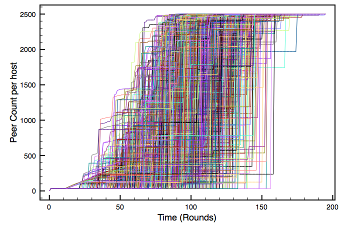
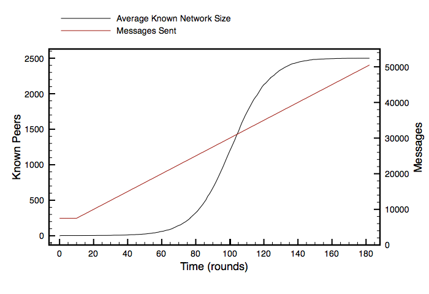
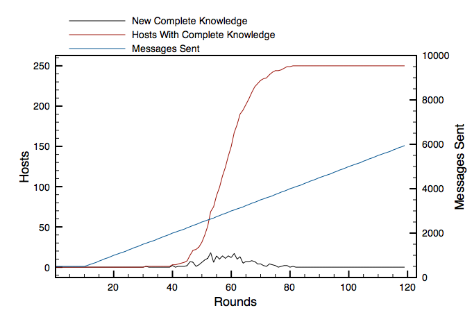

Jerry bought a new BMW. Phil saw him downtown, and later told Bobby when they talked on the phone. Bobby saw Bill and Donna at the market, and told them- "hey, Jerry's got a new car!". Bill met Mickey before the drum class Mickey was teaching at College of Marin, but he'd already heard about Jerry's new BMW from Keith, who had heard from Phil earlier.
When Jerry showed up to band practice that night he was really excited to show everyone his new car. But of course they had all already heard: the entire band heard about the new car even though he hadn't told anyone explicitly.
The Band had participated in a gossip protocol- their entire network was brought into a consistent state regarding Jerry's car without any central coordination or explicit, exhaustive distribution, as a side-effect of their normal social communication, by passing ad-hoc, opportunistic messages.
On computer networks, gossip protocols can be used to bring a cluster into consistent configuration state in much the same way Jerry and the boys found their consistent state: by passing and integrating state among peers.
The grand idea is to reach and maintain an "eventually consistent" state among a cluster of nodes, with a minimum of network traffic and bookkeeping overhead. Meaning:
We assume:
We're modelling real-world networks for a medium-to-large-sized internet company. We assume a "broadcast domain" comprises on the order of 10^2 hosts. A network may contain 10^2 domains. The entire company may contain 10^1 networks.
A simple protocol (per the Cornell link, above). As a participating node in a cluster, we may periodically:
I wrote a bare-bones network simulation package, to enable the quick development, deployment, and tweaking of gossip protocols without actually having to wrangle a real network. Since there is centralized control over the "network", instrumentation, gross behavior control, and failure simulation are all feasable.
The code exists at http://github.com/joshuathayer/fauxnet.
At this point, fauxnet models Nodes and Domains. Nodes are independent entities which can receive messages from Domains, and send messages to their Domain to be routed to any one Node on that Domain. A Node belongs to exactly one Domain. A Domain may contain many Nodes.
Additionally, a Node may create, and present to its Domain, a message which is routed to every Node on the Domain: a broadcast message.
The Domain is able to keep a count of messages sent, and is also able to peer into the state of each Node, for reporting and instrumentation purposes. Additionally, since all message routing takes place through the Domain, various failure modes are modelable in the Domain.
Using fauxnet, I started exploring data flow through an example network. To begin with, I was interested just in the discovery of nodes in the network.
As a node comes up "raw", it knows of absolutely no other participating nodes. Since all nodes come up "raw", nobody knows of anybody else and no network can emerge. To initiate any sort of network discovery, a broadcast message is sent. We don't want a "thundering herd" of broadcast messages as all hosts encounter an initial existential dilemma, so we introduce some randomness: since we're dealing with a domain size of some hundreds of hosts, we give each host a 1:100 chance of broadcasting a "existence" packet at each tick (and never broadcast at all if the node knows of any other peers to talk to). In this way, only a few hosts will broadcast, and only at bootstrap time, reducing load on the router.
After the initial broadcast, every node has at least one other node in their state table. The gossip begins: some random node (let's call it "A") contacts one of the initial broadcasters ("B"). Even though A only knows of the nodes the B also knows about from the initial broadcast round, A still transfers some new data to B: the existence of A itself. B now has a more complete picture of the network than any other node: it knows of all the initial broadcasters, as well as node A. Node C now contacts node B- B now knows about both A and C, but crucially B also transfers its state to C: C thus finds out about node A even though A did not talk to C directly. As each node starts to gossip with every other node, overall knowledge of the complete network starts to grow.

It's easy to see how average knowledge of the network starts to enter exponential growth. Each node finds out about more and more other nodes, and knowledge is shared freely. Each line in the plot above coorresponds to one node's idea of the size of the overall network (in a large domain of 2500 nodes). Notice the "steps" as a node finds a peer node with significantly more knowledge of the network, and learns a great deal at once about the network as a whole. After about 180 rounds, every node has a complete picture of the entire network.
Looking at the above plot, at any one time we can talk about the average knowledge of the entire network. Since we control each node in fauxnet, we are able to explore each node's state. By averaging the size of the "peer list" of each node at every tick, we develop the following plot (which also shows the total number of messages sent in the domain).

Well! It's a cumulative normal distribution! That's pretty cool. Let's look at it another way- instead of figuring the "average known network size", let's look at the count of nodes that have "complete network knowledge"- in this instance, this is the number of nodes that know the size of the network is 250 nodes. Additionally, let's plot the number of nodes that gain complete knowledge as a function of time, as well as the count of messages sent through the router.
